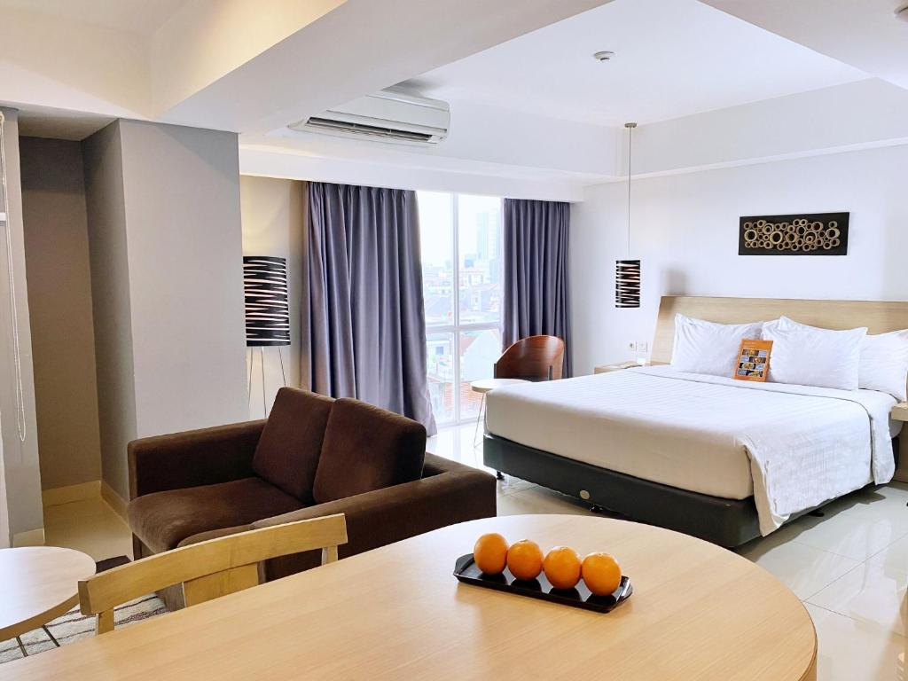

Make room for an unhurried stay in Jakarta

Begin your Jakarta stay with a comfortable place to return to at Harper MT Haryono (Cawang). Make space between your plans to pause and recharge.
Leave a little room in your schedule for the everyday moments that make a visit feel yours: a quiet morning, a shared conversation, and time to unwind.
More from the Journal